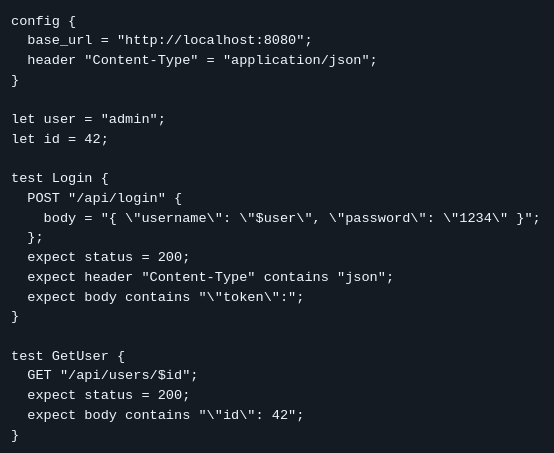

Compiler Design Project
api-tickler
api-tickler is a custom domain-specific language (DSL) for HTTP API testing that
transforms concise .test specifications into executable JUnit 5 integration
tests for Spring Boot applications.
Domain-specific language for HTTP API testing
api-tickler is a custom DSL that simplifies HTTP API testing by allowing developers to write concise, human-readable test specifications instead of repetitive Java test code. The parser automatically converts these specifications into executable JUnit 5 integration tests that communicate with Spring Boot applications using Java HttpClient.
The project demonstrates how compiler techniques can be applied to improve developer productivity by replacing boilerplate code with a specialized language tailored to API testing.

Problem addressed
Writing integration tests for REST APIs often involves repetitive setup, request construction, response validation, and boilerplate code that obscures the actual intent of a test.
api-tickler replaces that repetitive workflow with a purpose-built language that lets developers express test cases declaratively while automatically generating production-ready Java test code.
Compiler design
The language was implemented entirely in C using Flex for lexical analysis and
Bison for parsing. The compiler performs tokenization, recursive parsing,
syntax validation, semantic checks, and Java source code generation from
.test files.
The implementation also includes descriptive error reporting to help users identify invalid syntax and malformed test definitions quickly.
Language features
The DSL supports variable declarations, reusable string values, inline variable interpolation, HTTP request definitions, and an extensible grammar that can be expanded with additional testing constructs in the future.
These features enable developers to write expressive API tests while keeping test specifications concise and easy to maintain.
Technology integration
Generated source files target JUnit 5 and execute HTTP requests through Java HttpClient against a Spring Boot backend, allowing the DSL to fit naturally into existing Java development workflows without requiring custom runtime components.
This approach combines the simplicity of a domain-specific language with the reliability of established testing frameworks and integration tooling.
Outcome
api-tickler demonstrates practical compiler construction beyond academic parsing exercises by producing useful, executable artifacts. It highlights how custom languages can reduce repetitive development tasks while remaining fully compatible with modern software engineering practices.
The project showcases lexer and parser construction, grammar design, code generation, and seamless integration with Java-based backend testing.